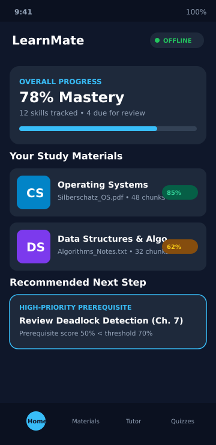
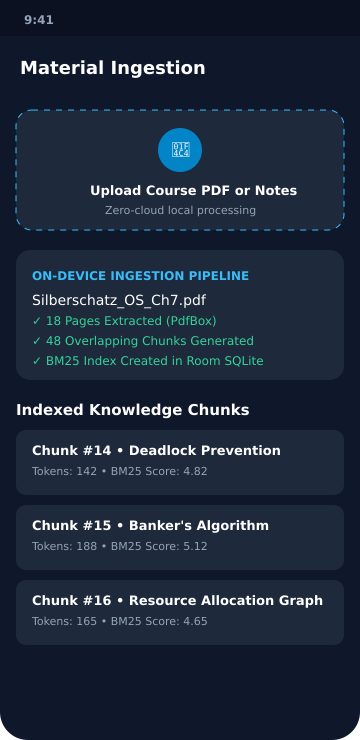
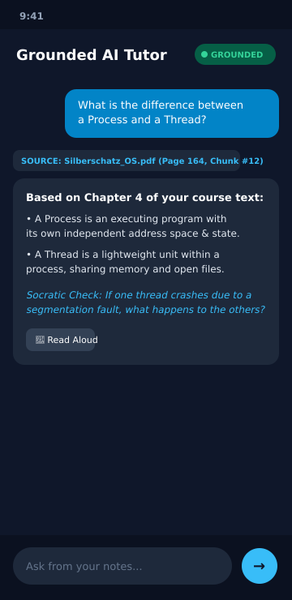
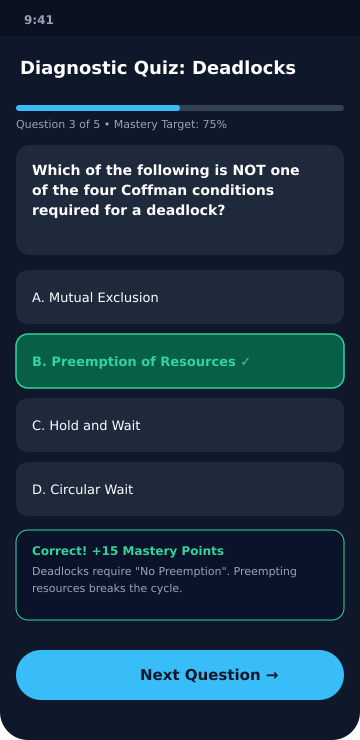

The Visionaries (Team ID: CT3Y)
PS-06 On-device personalized learning assistant
Turning student study materials into offline-first grounded tutoring, dynamic quizzes, and personalized learning paths without private cloud dependencies.
Student Material → Local Ingestion & Chunking → Room SQLite Knowledge Base → BM25 Retrieval → Grounded Socratic Tutor → Diagnostic Assessment → Skill Mastery Tracking → SM-2 Review Scheduling

MainViewModel, Room SQLite, and MasteryCalculator.
PdfTextExtractorTest and LocalRetrieverTest.

QuizEvaluatorTest, MasteryCalculatorTest, and SpacedRepetitionEngineTest.Build and test suite verified via included Gradle wrapper:
./gradlew :app:testDebugUnitTest # 13 suites pass in 3s ./gradlew :app:assembleDebug # Debug APK assembled cleanly
Harish Goraniya (Leader) • Krishna Parmar • Prushti Seladiya • Sakshi Talaviya
Code Carnival 3.0 • Problem Statement PS-06
Repository: GoraniyaHarish/NEW-AI-TUTOR